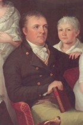

by
Stefan Bielinski
John Fonda, Jr. was born in 1761. He was the son of Albany residents Isaac D. and Susanna De Foreest Fonda. He also was known as "Fondey" and as "John I. Fonda."
While still in his teens, he joined the crusade for American liberties. He was an ensign in an Albany Ranger company and also a quartermaster and lieutenant in Colonel Marinus Willet's regiment of the New York troops. He saw active duty on the New York frontier. Surviving records refer to his his militia unit as "Fondey's party!"
In 1779, his name first appreared on a city assessment roll. In 1780, he began to take his place in Albany society when he was appointed firemaster in the second ward. With the end of the war, he entered business (selling imported glass and ceramics) and began to acquire real estate along Foxes Creek. His extensive real estate dealings in Albany and Watervliet are chronicled online!
In 1783, he married Cornelia Hun and settled into her father's home on North Market Street at the corner of Van Tromp. Their children were baptized in the Albany Dutch church where both parents were members. In 1790, his growing family was counted within the household of his father-in-law. By 1800, he had taken over as the head of the third ward household that now included a dozen members. In 1803, his family was memorialized in a beautiful portrait by Albany artist Ezra Ames.
Over the next decade, Fonda/Fondey brought his sons and son-in-law into his business and sought to develop his waterfront holdings. The landmark home and grounds were North End fixtures.
John Fonda, Jr. filed a will in January 1814. He was dead by August 2 when the passed probate. His widow and sons lived on in their Market Street home.

notes
 Sources: The life of John Fonda, Jr. ("Fondey") is CAP biography
number 3788. This profile is derived chiefly from family
and community-based resources.
Sources: The life of John Fonda, Jr. ("Fondey") is CAP biography
number 3788. This profile is derived chiefly from family
and community-based resources.
Detail from a family portrait by Ezra Ames.
first posted: 12/30/02